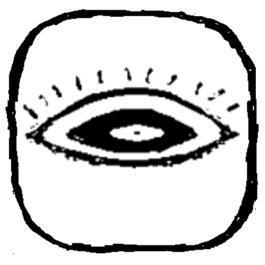
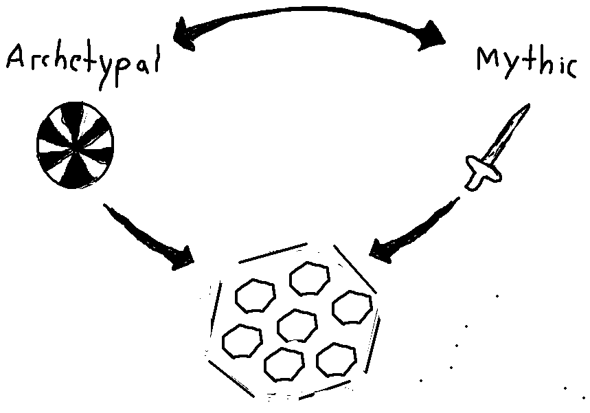

In online play, Orda begins with procedural map generation, including the placement of terrain and structures. Players are then shown their starting hands, which are also randomized, and bid on starting locations.
Start of game on the small map
From there, players deploy units around their Queen and begin securing resources and territory while trying to destroy the enemy Queen. On each turn, players spend energy to move, attack, activate abilities, and deploy new material onto the board. Supply lines are created naturally as units move outward and are vital to maintaining an effective position, which means expansion also creates vulnerabilities that have to be defended.
Energy is the main currency of the game. It is used both for unit actions and for introducing new material onto the board, and replenishes each turn according to the resources a player controls. Tactical action is therefore tied directly to territorial control.
environment
Terrain is crucial. Forests hide units, swamps immobilize, mountains block movement and line-of-sight. Resources, cities, and special sites give particular areas of the map strategic importance and create natural points of conflict.
The environment is not simply a backdrop for combat. Terrain and structures can be modified, and interact directly with movement, visibility, supply, unit abilities, and one another. The value of a position therefore depends heavily on what is around it and what forces are present. Geography is intended to actively shape the game rather than simply contain it.
material
In online play, the units and special items available to you are drawn at random from a shared pool.
specimens
The units are called Specimens. They share the same basic attributes, but each has unique abilities and special properties. Their usefulness is highly situational, and much of the game comes from finding combinations between particular Specimens, terrain, items, and other circumstances on the board.
wonders
The special items are called Wonders. These are short-lived but extremely powerful interventions, intended to create sudden local advantages, break stalemates, or turn losing positions into winning ones. Unlike Specimens, they are generally something you build toward and expend at a decisive moment.
structures
uncertainty and surprise
In some respects Orda is highly deterministic. Once an action is possible, its immediate consequences are generally predictable. Attacks do fixed damage, abilities have defined effects, and movement and terrain follow stable rules. There are very few moments where a player simply has to hope that something works.
The uncertainty comes instead from the randomized maps and material, which preclude cookie-cutter strategies and make every game different. It also comes from the way different systems and player decisions interact before a position is resolved.
Specimens and Wonders enter the board concealed. Players can see that something is there without necessarily knowing what it is or what it can do. This creates a second game layered over the visible one. Players can bluff, disguise their intentions, hold important abilities in reserve, and force opponents to account for possibilities that may or may not actually be present. Revealing a concealed piece can change the meaning of a position all at once.
From a design standpoint, a major intention was that the game should reward intuition and novelty over calculation or viewing the board in a mechanistic way. The element of uncertainty moves the balance towards unorthodox strategies. Genuinely surprising their opponent should be what both players strive for.
single player

Single player takes the form of a long campaign against an unseen opponent, with individual encounters occurring across different planets. A galaxy map can be explored freely, allowing the player to choose where to travel, when to engage the enemy, and which opportunities to pursue.
Specimens, Wonders, and other resources acquired along the way carry over between encounters. This creates a strong meta-game around plotting a course through the galaxy, building the right collection of material, and deciding when resources should be spent or conserved. Choices made on one planet can therefore shape encounters much later in the campaign.
The ultimate goal is to bring your Queen safely to the other side of the galaxy.
concept
You can probably see from the presented game elements that they have an archetypal aspect. A frame story reveals the game to have been a creation of an alien civilization. The planetary conflicts and all the suffering they entail are very real, but in actuality are merely echoes of a conflict playing out on a higher level of reality. The visible game is positioned between both of these worlds.

To be more specific, the Mythic world is the one the game seems to be literally alluding to. There is a planet, populated by cities and alien life, where a battle rages. Small gods or heroes walk the earth, wielding artifacts of astounding power. The planet is blown up as they battle, cities being abandoned, forests burning down. Vast alien power grids are constructed across the surface, but organic monuments are also appearing, around which a new religion seems to be growing.
The Archetypal world is one where this is viewed as metaphor. The conflict is really about the struggle to better oneself, so that one may overcome. When players compete, they are really pushing each other to greater levels of intuition and sensitivity. The obstacles are really self-imposed; it all goes back to the self.
I’ll try to make this more concrete by saying game elements can be seen as correlating to psychological ones. What does the Ram (with its specific rule of pushing other pieces) represent within us? Something that compels us to go forward against all odds — bravery, stubbornness? The Ram aspect has a double nature. It might be beneficial or dangerous, so the question is how best to make use of it.
In general, I think the best approach is to evoke the archetypal in an indirect way, through art and sound and the names and descriptions of things.
For the Ram the description I am using now is:
a solid wave of crushing bone, the gallop of intractable wheels . . . as determined as a planet . . . it follows its line with the certainty of someone falling to their death
The visuals of the game are likewise pitched somewhere between the Archetypal and the Mythic. The game board is certainly abstract, the pieces too. The intention is for them to be alive, but also definitely game pieces. The player should feel the presence of the board and that they are playing a game, rather than being literally immersed in the planetary struggle. And beyond this there should be an omnipresent and creeping feeling that the game is more than it seems.
visuals and sound
What is playable now is a 2D version consisting entirely of MS Paint-style art made by me. I came up with symbols for most of the game pieces, but the intention was always to bring in more able artists for the graphics of the final game.
The direction we have settled on is to construct most of the game components in the real world, using clay and a variety of other materials, and bring them into the game with 3D scanners. This will include the hexes, the game pieces, and even effects occurring between units. I think this approach can create a compelling and, at the very least, unique look for the game.
The final artwork is still in the concept stage, but the unit designs have begun to take shape. I was initially inspired by these ancient game pieces in the Met. From there, the idea evolved into mask-like faces mounted on bone or some other long structure: pieces that can twist, bend, and hop across the board. Their faces can swivel and look in different directions, with moving mouths and other articulated parts.
Structures use simpler geometries, but they also have moving parts. Items float around the units and interact with the environment. When a unit is attacked, its armor zips into place to intercept the blow; potions are poured directly into the unit’s open mouth.
The current idea is for the stem beneath each unit to be spine-like, with its length indicating how much life the unit has left.
use the arrows or left and right keys to move through the studies